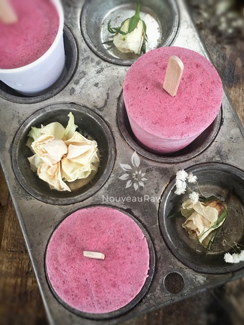

Chia Cherry Yogurt Dixie Pops
 What a wonderful summer treat… Chia Cherry Yogurt Dixie Pops! Cool, refreshing, and full of summer goodness, they are also raw, vegan, nut-free, and cultured.
What a wonderful summer treat… Chia Cherry Yogurt Dixie Pops! Cool, refreshing, and full of summer goodness, they are also raw, vegan, nut-free, and cultured.
A few days ago while we were at the grocery store, my husband wanted to buy jam. Pfft! I can make you some jam, you silly man.
Our cherry trees are almost into full swing of sweet, juicy, ripeness and the temptation was far too great, and we found ourselves snatching 1, 2, 10, 30… (I wasn’t counting? Were you?) of our favorite fruit.
They say that just one mature cherry tree produces 7,000 cherries! *holds belly and moans* Anyway, with cherries in hand, I made Bob a Chia Cherry Summer Jam. Four cups’ worth–I tend to get overly-excited from time to time! I put some of the jam into a jar for his morning breakfast enjoyment and took the remainder of it to make these wonderful Dixie pops.
Let’s Talk Yogurt
There are many ways that we can go about this. You can make your own cultured yogurt. It can be made with young Thai coconut meat (here) or with cashews (here).
If you are in a pinch, you can even use full-fat canned coconut milk; though it’s not cultured, it will create a creamy base for these frozen treats. You could even use dairy yogurt. This recipe will adapt pretty darn well to whatever you decide to use.
I hope you enjoy this recipe. Many blessings, amie sue
Yields 10 / 3oz Dixie cup pops
Preparation:
- In the blender, combine the Chia Cherry Summer Jam and yogurt. Blend until mixed well. Taste and add stevia or preferred sweetener, if needed.
- The sweetener may not be needed; it depends on your taste buds and how sweet the fresh fruit is that you use in the jam recipe.
- Pour the mixture into a Ziploc bag, squeeze the excess air out, and snip the bottom corner of the bag.
- With your “piping bag,” pipe the mixture into the popsicle mold.
- I used 3oz plastic Dixie cups. These are perfect for portion control, and they pop right out after being warmed in hand for about 10 seconds.
- Tap each cup on the countertop to work out any air bubbles.
- Slide small popsicle sticks into the center, cover with plastic wrap, and place in the freezer overnight or until frozen.
- When ready to enjoy, remove from the freezer and roll the Dixie cup back and forth in the palm of your hands. This will warm it up a tad. With your thumb, press up on the bottom of the cup, and the popsicle should come right out.
Freezing Suggestions for Ice Cream:
-
Freeze in popsicle molds or 3 oz Dixie cups with a popsicle stick inserted.
-
-
Store the ice cream in the very back of the freezer, as far away from the door as possible. Every time you open your freezer door you let in warm air. Keeping ice cream way in the back and storing it beneath other frozen-sold items will help protect it from those steamy incursions.
-
Wish to make your own raw ice cream, wonder what machine I might recommend, and more? Click (
here) to check out the Reference Library!

© AmieSue.com